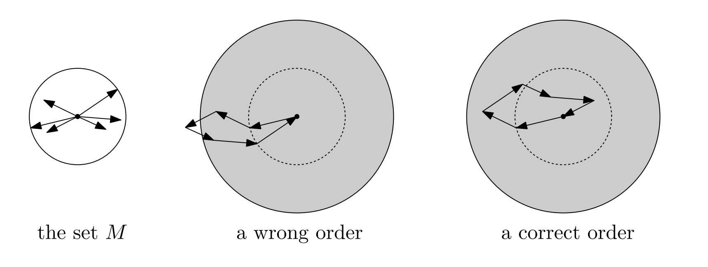

Theorem: Let \( M \) be an arbitrary set of \( n \) vectors in \( \mathbb{R}^d \) such that \( \|v\| \leq 1 \) for every \( v \in M \), where the norm \( \|v\| \) of \( v \) is the usual Euclidean length, and \( \sum_{v \in M} v = 0 \). Then it is possible to arrange all vectors of \( M \) into a sequence \( (v_1, v_2, \ldots, v_n) \) in such a way that \( \|v_1 + v_2 + \cdots + v_k\| \leq d \) for every \( k = 1, 2, \ldots, n \).
Proof:
We start by introducing the concept of a "good" set of vectors.
Definition of a "Good" Set: A set \( K = \{w_1, w_2, \ldots, w_k\} \) of \( k \geq d \) vectors in \( \mathbb{R}^d \), each of length at most 1, is called good if there exist coefficients \( \alpha_1, \ldots, \alpha_k \) satisfying:
\(\alpha_i \in [0, 1], \quad \text{for all } i = 1, 2, \ldots, k\)
\(\alpha_1 w_1 + \alpha_2 w_2 + \cdots + \alpha_k w_k = 0\)
\(\alpha_1 + \alpha_2 + \cdots + \alpha_k = k - d.\)
Step 1: Checking the Norm Condition
If \( K = \{w_1, w_2, \ldots, w_k\} \) is a good set, then:
\(\left\| w_1 + w_2 + \cdots + w_k \right\| \leq d.\)
Indeed, we have:
\(\left\| \sum_{i=1}^k w_i \right\| = \left\| \sum_{i=1}^k w_i - \sum_{i=1}^k \alpha_i w_i \right\| \leq \sum_{i=1}^k (1 - \alpha_i) \|w_i\| \leq \sum_{i=1}^k (1 - \alpha_i) \leq d.\)
Step 2: Main Claim
Claim: If \( K = \{w_1, w_2, \ldots, w_k\} \) is a good set of \( k > d \) vectors, then there is some \( i \) such that \( K \setminus \{w_i\} \) is a good set of \( k - 1 \) vectors.
Proof of the Claim:
Consider the following system of linear equations for unknowns \( x_1, x_2, \ldots, x_k \):
\[x_1 w_1 + x_2 w_2 + \cdots + x_k w_k = 0\]
\[x_1 + x_2 + \cdots + x_k = k - d - 1.\]
This system has \( d + 1 \) equations for \( k \) unknowns. If \( \alpha_1, \ldots, \alpha_k \) are the coefficients that witness \( K \) being good, then setting \( x_i = \frac{k - d - 1}{k - d} \alpha_i \) provides a solution in \([0, 1]^k\).
By the lemma, there is also a solution \( \tilde{x} \in [0, 1]^k \) with at least \( k - d - 1 \) components equal to 0 or 1. We want to see that at least one component of \( \tilde{x} \) has to be 0. Indeed, if all the \( k - d - 1 \) components guaranteed by the lemma happen to be 1, then all the remaining \( d + 1 \) components must be 0, since all components add up to \( k - d - 1 \).
Now, for any index \( i \) with \( \tilde{x}_i = 0 \), the set \( K \setminus \{w_i\} \) is good. The remaining components of \( \tilde{x} \) can be used in the role of the \( \alpha_i \) in the definition of a good set.
Step 3: Inductive Construction
We start with the set \( M_n := M \), which is obviously good since \( \sum_{v \in M} v = 0 \) and the conditions hold trivially. Using the claim, we find a vector in \( M_n \) whose removal produces a good set. We call this vector \( v_n \) and let \( M_{n-1} := M_n \setminus \{v_n\} \).
Similarly, having constructed the good set \( M_k \), we find a vector \( v_k \in M_k \) such that \( M_{k-1} := M_k \setminus \{v_k\} \) is good, and so on, all the way down to \( M_d \).
We are left with the set \( M_d \) of \( d \) vectors, and we number these arbitrarily as \( v_1, \ldots, v_d \). For \( k \leq d \), we obviously have \( \|v_1 + \cdots + v_k\| \leq k \leq d \), and for \( k > d \), the norm of the sum of all vectors in \( M_k \) is at most \( d \) since \( M_k \) is a good set.
Hence, the theorem is proved.